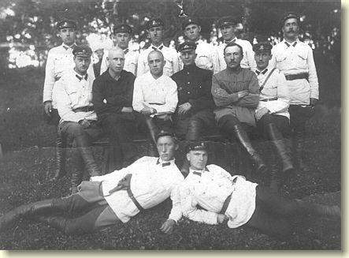
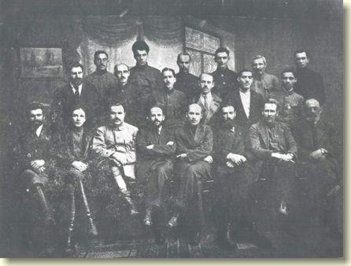
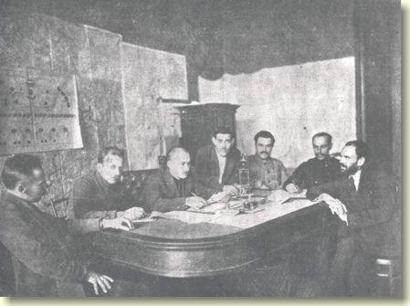
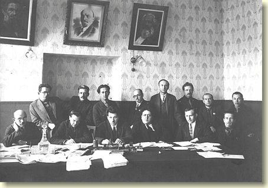

История
История развития учреждений юстиции
Формирование органов власти и управления Социалистической Советской Республики Белоруссии определяло пути становления органов юстиции.
На I съезде Советов рабочих, крестьянских и красноармейских депутатов Белоруссии, состоявшемся 2-4 февраля 1919 г., была принята Конституция Социалистической Советской Республики Белоруссии, которая устанавливала верховенство власти съезда Советов Белоруссии, а в период между съездами - Центрального Исполнительного Комитета. В соответствии с Конституцией ЦИК Белоруссии являлся высшим законодательным, распорядительным и контролирующим органом.
На своем первом послесъездовском заседании 5 февраля 1919 г. Центральный Исполнительный Комитет образовал Большой и Малый Президиум. В Большой Президиум входили все Комиссары и данный орган фактически являлся Советом Комиссаров. Был утвержден список Комиссаров, в котором Комиссаром Юстиции значился Гетнер А.Х.
В это же время в Белоруссии проводилась политика сближения власти и объединения территорий Белоруссии и Литвы. В связи с образованием 6 февраля 1919 г. Советской Социалистической Республики Литвы и Белоруссии вопросы юстиции были возложены на образованный в марте 1919 г. Народный Комиссариат Юстиции Литбел, а на территории Минской губернии - Минский губернский отдел юстиции.
После изгнания из Белоруссии белопольских оккупантов постепенно меняя статус и подчиненность, возобновилась деятельность Наркомюста Социалистической Советской Республики Белоруссия: с июля 1920 г. - как отдела юстиции Мингубревкома, с 1 августа 1920 г. - отдела юстиции Военревкома ССРБ, с 26 августа 1920 г. - Комиссариата Юстиции Военревкома ССРБ.
II съезд Советов ССР Белоруссии, проходивший 14-20 декабря 1920 г., внес дополнения в Конституцию Социалистической Советской Республики Белоруссии, устанавливающие образование Центральным Исполнительным Комитетом Белоруссии Совета Народных Комиссаров. СНК принадлежало общее управление делами Социалистической Советской Республики Белоруссия, которое осуществлялось посредством создания 15 народных комиссариатов, в том числе и Народный комиссариат юстиции. При каждом народном комиссаре под его председательством образовывались коллегии, члены которой утверждались СНК.
Впервые наиболее полно и конкретно были определены задачи и структура Наркомюста в Положении о Народном Комиссариате Юстиции ССРБ в 1922 г.
Многофункциональность Наркомюста определила разветвленную структуру органов юстиции.
В состав Народного Комиссариата Юстиции вошли Общий отдел, отдел Охраны Революционной Законности, Законодательно-Кодификационный отдел, Исправительно-Трудовой отдел.
Основными функциями отдела Охраны Революционной Законности являлись организация обвинения, наблюдение за производством дознания и следствия, предварительное рассмотрение и дача заключений по делам, направляемым в Верховный Трибунал (как в порядке кассационном, так и в порядке Высшего Судебного контроля), рассмотрение жалоб о незаконных действиях и возбуждение уголовного преследования, наблюдение за местами заключения.
Прокуроры из штата данного отдела возглавляли Верховный Трибунал, Революционный Трибунал, Совет Народных Судей.
В течение 1922 г. структура органов юстиции претерпела некоторые изменения: Совет Народных Судей и Революционный Трибунал были объединены в единый Высший Суд Республики, при Наркомюсте учрежден отдел Прокуратуры.
В аппарате Народного Комиссариата Юстиции был сформирован Отдел культов, стал самостоятельным структурным подразделением Нотариальный отдел. Комиссар Юстиции одновременно стал Прокурором Республики.

Постановлением III сессии Центрального Исполнительного Комитета БССР VI созыва 3 ноября 1924 г. были утверждены и введены в действие Общее Положение о Народных Комиссариатах БССР и положения об отдельных Народных Комиссариатах, в том числе и Положение о Народном Комиссариате Юстиции БССР.
В структуру Наркомюста входили Верховный Суд Республики и Высший Суд Республики. Организация и инструктирование судебных органов осуществлялось Верховным и Высшим Судами в соответствии с Положением о судоустройстве под общим руководством Наркомюста.
Немного позднее в систему Народного Комиссариата Юстиции официально вошло Всебелорусское Объединение Защитников.
В результате обследования работы серединных и высших звеньев Прокуратуры и судебно-следственных органов Наркомюста, которое было проведено Народным Комиссариатом Рабоче-Крестьянской Инспекции в феврале-марте 1928 г., Нарком Рабоче-Крестьянской Инспекции СССР постановил Наркомат Юстиции ликвидировать.
Такая инициатива в высших правительственных органах не была поддержана и 15 июня 1929 г. было принято Постановление Центрального Исполнительного Комитета и Совета Народных Комиссаров БССР об утверждении Положения о Народном Комиссариате Юстиции БССР, определившего Наркомюст БССР в составе Прокуратуры Республики и при ней следователей по важнейшим делам, Верховного Суда и Юридической Консультации. Положение о комиссариате 1929 г. действовало в течение десяти лет.
В связи с преобразованием органов государственной власти и управления, а также с принятием в августе 1938 г. Закона Верховного Совета СССР "О судоустройстве СССР, союзных и автономных республик" был подготовлен проект и принято новое Положение о Народном Комиссариате Юстиции БССР, утвержденное Постановлением Совета Народных комиссаров БССР от 8 октября 1939 г.
На Народный Комиссариат Юстиции БССР возлагалось руководство деятельностью управлений юстиции при областных Советах Депутатов Трудящихся, организация деятельности судов, руководство деятельностью нотариальных органов, организация и руководство деятельностью адвокатуры, подготовка и переподготовка кадров органов юстиции, суда, прокуратуры, нотариата, адвокатуры и арбитража, систематизация и подготовка материалов по кодификации законодательства Белорусской ССР.
В июне 1941 г. в связи с немецко-фашистской оккупацией территории Белоруссии Народный Комиссариат Юстиции БССР был эвакуирован из г. Минска в г. Москву, где продолжал свою деятельность.
С освобождением части территории Белоруссии от немецко-фашистских оккупантов Наркомюст БССР в декабре 1943 г. переехал из г. Москвы в г. Ново-Белицу, а в июле 1944 г. - в г. Минск.
На основании Закона СССР "О преобразовании Совета Народных Комиссаров ССР в Совет Министров СССР и Советов Народных Комиссаров союзных и автономных республик в Советы Министров союзных и автономных республик" Указом Президиума Верховного Совета БССР от 26 марта 1946 г. Народный Комиссариат Юстиции БССР был преобразован в Министерство юстиции БССР.

Положение 1939 года, регулирующее деятельность Министерства юстиции БССР, практически не изменялось, сохраняя основные функции министерства. Расширение функций Министерства юстиции БССР произошло в соответствии с постановлением Совета Министров БССР от 25 апреля 1953 г. № 500 "О Государственном арбитраже при Совете Министров БССР", когда в состав министерства был передан Государственный арбитраж.
В июле 1953 г. была утверждена новая структура и штаты Министерства юстиции БССР. Помимо ранее существовавших структурных подразделений министерства, в его состав вошло Управление исправительно-трудовых лагерей и колоний (на союзном бюджете) и Госарбитраж (на правах управления). К органам, непосредственно подчиненным Министерству юстиции, были отнесены двенадцать Управлений Министерства юстиции БССР при областных Советах депутатов трудящихся (Барановичском, Бобруйском, Брестском, Витебском, Гомельском, Гродненском, Могилевском, Молодечненском, Минском, Пинском, Полесском, Полоцком), такое же количество областных судов и Президиумов коллегий адвокатов, постояннодействующие 3-месячные курсы по переподготовке судебных исполнителей и секретарей народных судов в г. Минске и Научно-исследовательская криминалистическая лаборатория в г. Минске.
На основании Указа Президиума Верховного Совета СССР от 4 августа 1956 г. "О расширении прав краевых, областных судов и упразднении управлений министерств союзных республик при краевых, областных Советах депутатов трудящихся" Совет Министров БССР издал постановление от 7 сентября 1956 г. № 541, в соответствии с которым все управления Министерства юстиции БССР при областных Советах депутатов трудящихся были упразднены.
Структура Министерства юстиции БССР согласно данного постановления состояла из руководства, управления судебных органов, отдела кадров,отдела кодификации,отдела нотариата, отдела адвокатуры, финансово-хозяйственного отдела и канцелярии. А через год на министерство было возложено руководство органами ЗАГС и в аппарате Минюста был организован соответствующий отдел, который спустя два месяца был объединен с отделом нотариата.
В целях обеспечения судебных и следственных органов республики квалифицированной криминалистической экспертизой и дальнейшего развития научно-исследовательской работы в области судебной экспертизы и криминалистики постановлением Совета Министров Белорусской ССР от 18 ноября 1958 г. № 750 принято решение об организации научно-исследовательского института судебной экспертизы Министерства юстиции БССР на базе Минской научно-исследовательской криминалистической лаборатории.
Не смотря на достаточно отлаженную систему Министерства юстиции, широкий спектр его деятельности, Указом Президиума Верховного Совета БССР от 20 февраля 1960 г. Министерство юстиции БССР было упразднено. Его функции по руководству районными (городскими) народными и областными судами, государственными нотариальными конторами, а также по ведению судебной статистики были возложены на Верховный Суд БССР.
В соответствии с названным Указом Совет Министров Белорусской ССР принял постановление от 9 марта 1960 г. № 116, в котором установил образование Юридической комиссии при Совете Министров Белорусской ССР. Основной задачей Юридической комиссии являлось выполнение работы, связанной с кодификацией и систематизацией законодательства Белорусской ССР, а также разработка по поручениям Правительства и предварительное рассмотрение вносимых в Совет Министров БССР проектов законодательных актов и решений Правительства по вопросам нормативного характера.
В апреле 1963 г. на Юридическую комиссию было возложено методическое руководство органами ЗАГС на территории Белорусской ССР.
Во исполнение Указа Президиума Верховного Совета Белорусской ССР от 15 февраля 1965 г. Юридическая комиссия при Совете Министров БССР стала осуществлять руководство и контроль за деятельностью коллегий адвокатов в Белорусской ССР, в ее составе был организован отдел адвокатуры, в связи с чем были внесены изменения в Положение об адвокатуре Белорусской ССР.

Во исполнение постановления ЦК КПСС и СМ СССР постановлением ЦК КПБ и Совета Министров БССР от 17 сентября 1970 г. № 290 "О мерах по улучшению работы судебных и прокурорских органов" было признано целесообразным образование союзно-республиканского Министерства юстиции БССР, отделов юстиции в областях и упразднение Юридической комиссии при Совете Министров БССР.
Министерство юстиции было создано вновь на основании Указа Президиума Верховного Совета БССР от 5 ноября 1970 года № 32 "Об образовании союзно-республиканского Министерства юстиции Белорусской ССР".
В соответствии с Положением о Министерстве юстиции, утвержденным, постановлением Совета Министров БССР от 19 октября 1972г., определялись основные задачи министерства:
- всемерное укрепление социалистической законности;
- обеспечение организационного руководства судами;
- систематизация и подготовка предложений по кодификации законодательства;
- совершенствование деятельности нотариата, органов записи актов гражданского состояния, адвокатуры, судебно-экспертных учреждений;
- совершенствование правовой работы в народном хозяйстве;
- пропаганда правовых знаний среди населения;
- содействие развитию правовой науки;
- обеспечение учреждений и организаций системы министерства и судебных органов квалифицированными кадрами.
В ноябре 1976 года в связи с началом работ по подготовке и изданию Свода законов Белорусской ССР на Министерство юстиции было возложено формирование материалов Свода законов Белорусской ССР и ответственность за качество подготовки и полноту помещаемых в Своде правовых актов. Работа по исполнению данной функции осуществлялась Минюстом до момента приостановления работы по обновлению Свода законов Белорусской ССР в 1989 году.
Постановлением Совета Министров Республики Беларусь от 25 мая 1992 г. № 308 была установлена новая структура центрального аппарата Минюста.
На основе законопроектного управления были сформированы два управления, специализирующиеся в области законодательства о государственном и социальном строительстве и хозяйственного законодательства. Вопросы правовой пропаганды, нотариата, ЗАГСов и адвокатуры были отнесены к компетенции управления правового обслуживания граждан и организаций. В структуре появились управление по делам общественных объединений и управление правового обеспечения внешних связей. Кроме того, в структуру вошли управление обеспечения деятельности судов, планово-финансовое управление, отдел кадров и общий отдел. При Минюсте состояли Научно-исследовательский институт проблем криминологии, криминалистики и судебной экспертизы и Белинюрколлегия.
Этим же постановлением было дано поручение Министерству юстиции создать в 1992-1995 годах республиканский центр правовой информации.
Произошедшие изменения предопределили принятие нового Положения о Министерстве юстиции Республики Беларусь, утвержденного постановлением Совета Министров Республики Беларусь от 25 ноября 1992 г. № 708, в систему министерства вошли:
- управления юстиции исполкомов областных и Миниского городского Советов народных депутатов;
- государственные нотариальные конторы;
- Научно-исследовательский институт проблем криминологии, криминалистики и судебной экспертизы;
- Специализированная коллегия адвокатов Республики Беларусь - Белинюрколлегия.
Наряду с ранее определенными, были сформулированы новые задачи министерства:
- правовое обеспечение внешних связей и правовая защита интересов Республики Беларусь, ее граждан и организаций за рубежом;
- государственная регистрация общественных объединений и осуществление контроля за соблюдением этими объединениями их уставов;
- координация деятельности исполнительных органов государственной власти по осуществлению судебно-правовой реформы и проведению в жизнь правовой политики.
С августа 1993 года задачи Министерства юстиции были дополнены лицензированием отдельных видов профессиональной юридической деятельности и государственной регистрацией ведомственных нормативных актов.
Министерством юстиции в целях создания единой государственной системы правовой информации и во исполнение поручения Совета Министров Республики Беларусь был сформирован в структуре Научно-исследовательского института проблем криминологии, криминалистики и судебной экспертизы Республиканский центр правовой информации. Для оперативного обеспечения государственных органов, субъектов хозяйствования и граждан достоверной и полной правовой информацией была проведена работа по формированию в центре единого эталонного банка данных правовой информации на бумажных и электронных носителях. В соответствии с Указом Президента Республики Беларусь от 30 июня 1997 г. № 338 Республиканский центр правовой информации был преобразован в Национальный центр правовой информации Республики Беларусь.

Изменения действующего законодательства Республики Беларусь вызвали необходимость принятия нового Положения о Министерстве юстиции, которое было утверждено постановлением Кабинета Министров Республики Беларусь от 1 декабря 1995 г. № 656. В систему Минюста вошли управления юстиции областных и Минского городского исполкомов, государственные нотариальные конторы, Научно-исследовательский институт проблем криминологии криминалистики и судебной экспертизы.
С января 1997 г. по октябрь 2001 г. в систему Минюста входил Комитет по авторским и смежным правам. Министерство юстиции осуществляло проведение единой государственной политики в республике по вопросам авторского права и смежных прав.
С 19 февраля 2001 г. перед Министерством юстиции была поставлена задача проведения единой государственной политики по вопросам урегулирования коллективных трудовых споров. В систему Минюста был введен Республиканский трудовой арбитраж.
В соответствии с ныне действующим Положением о Министерстве юстиции Республики Беларусь, утвержденным постановлением Совета Министров от 31 октября 2001 г. №1605, Минюст является республиканским органом государственного управления и подчиняется Совету Министров Республики Беларусь, а по отдельным вопросам деятельности, предусмотренным законодательными актами Республики Беларусь, - непосредственно Президенту Республики Беларусь.
На Минюст возлагаются следующие основные задачи:
- реализация государственной политики в сфере юстиции, в том числе урегулирование коллективных трудовых споров, а также в сфере архивного дела и делопроизводства;
- участие в правовом обеспечении нормотворческой деятельности Президента Республики Беларусь, Национального собрания Республики Беларусь и Совета Министров Республики Беларусь, обеспечение скоординированности нормотворческой работы в Правительстве Республики Беларусь (в системе республиканских органов государственного управления, подчиненных Правительству Республики Беларусь);
- обязательная юридическая экспертиза нормативных правовых актов Национального банка, Национальной академии наук Беларуси, министерств, иных республиканских органов государственного управления, областных, Минского городского Советов депутатов, облисполкомов и Минского горисполкома;
- организация методологического руководства и координации деятельности главных управлений юстиции облисполкомов по вопросам проведения ими обязательной юридической экспертизы нормативных правовых актов местных Советов депутатов, исполнительных и распорядительных органов базового уровня, а также осуществление контроля за этой деятельностью;
- организация работы по развитию и совершенствованию системы получения, хранения и распространения полной, достоверной и своевременной правовой информации в судах и организациях системы Минюста;
- руководство нотариатом и государственный контроль за нотариальной деятельностью;
- руководство регистрацией актов гражданского состояния отделами записи актов гражданского состояния райгорисполкомов и местных администраций районов в городах, Домами (Дворцами) гражданских обрядов горисполкомов, поселковыми и сельскими исполнительными и распорядительными органами, а также контроль за регистрацией актов гражданского состояния этими органами;
- государственная регистрация политических партий, республиканских профессиональных союзов, международных и республиканских общественных объединений, их союзов (ассоциаций), республиканских государственно-общественных объединений, республиканских и международных фондов, созданных на территории Республики Беларусь, Белорусской торгово-промышленной палаты, Белорусской нотариальной палаты, организационных структур международных общественных объединений, созданных на территории иностранных государств, постоянно действующих международных арбитражных (третейских) судов, осуществление контроля за соблюдением ими учредительных документов, государственная регистрация иных некоммерческих организаций в случаях, предусмотренных законодательными актами Республики Беларусь;
- организационно-методологическое обеспечение и координация государственной регистрации и ликвидации (прекращения деятельности) коммерческих и некоммерческих организаций, индивидуальных предпринимателей (за исключением регистрации и ликвидации банков, небанковских кредитно-финансовых организаций, страховых организаций, включая страховые организации с иностранными инвестициями), а также контроль за этой деятельностью;
- ведение Единого государственного регистра юридических лиц и индивидуальных предпринимателей;
- материально-техническое, финансовое, организационное и кадровое обеспечение областных, Минского городского, районных (городских) судов и организаций системы Минюста, повышение квалификации кадров этих органов и организаций;
- организационное и кадровое обеспечение Белорусского военного суда и межгарнизонных военных судов;
- организационное и материально-техническое обеспечение органов судейского сообщества;
- организация научно-исследовательской работы в области криминалистики, судебной экспертизы, документоведения, архивоведения, археографии, электронного документирования, контроль за сроками и порядком проведения экспертиз и специальных исследований, содействие развитию правовой, документоведческой и архивоведческой науки, обеспечение внедрения научно-методических рекомендаций в практику судов, учреждений Государственной архивной службы Республики Беларусь и иных организаций;
- организация и развитие системы юридических услуг;
- представление в пределах своей компетенции интересов Республики Беларусь на международном уровне;
- рассмотрение отдельных вопросов, связанных с исчислением стажа государственной службы;
- распространение положительного опыта правовой работы юридических служб государственных организаций
- Актуально 2
- Актуально 1
- 1111111111 1111111111 1111111111 1111111111 1111111111 1111111111 1111111111 1111111111 1111111111 1111111111 1111111111 1111111111 1111111111 1111111111 1111111111 1111111111 1111111111 1111111111 1111111111 1111111111 1111111111 1111111111 1111111111 1111111111 1111111111 1111111111 1111111111 1111111111 1111111111 1111111111
-
кто из перечисленных животных больше нравится?
Котейки^_^Собачки^.^Котейки^_^Собачки^.^
-
Государственная регистрация политических партий, их союзов (ассоциаций) и их символики ...
20
-
Государственная регистрация местных общественных объединений, территориальных профессиональных союзов, профессиональных союзов ...
5
-
Предоставление информации по каждому субъекту, содержащейся в Едином государственном регистре ...
1